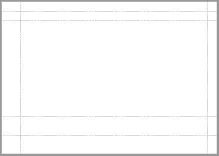
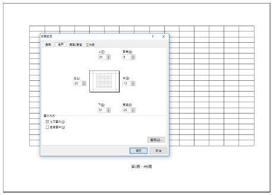
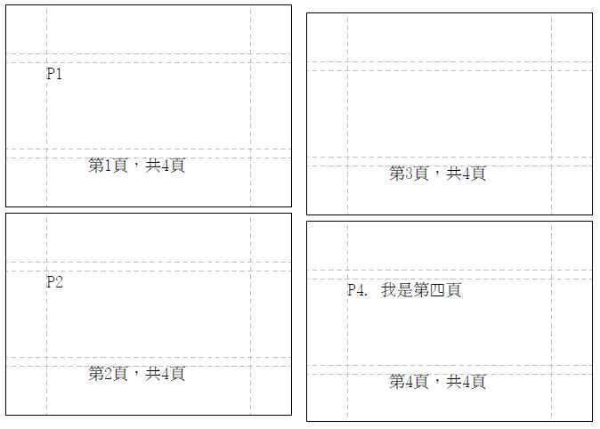
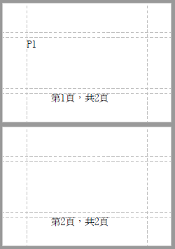

邊界控制
- 適用於 PDF / EXCEL

再回顧一下基本概念中看到的「頁面版型結構」，使用 BaseLayoutInfo 可定義其中的定位資訊。
單位為 pixel，可以使用 LengthUnit 的 trans() 函式進行換算，如下例為公分、公厘、英吋不同單位設定結果。
(邊界虛線以測試套件的 showMarginBorder=TRUE 輸出。)
- Sample_Page_Margin.java
private LayoutInfo createLayout() {
// ! 定義四周邊界大小.
final float marginLeft = LengthUnit.CM.trans(2.54f); // 左方以 公分為單位，合 1英吋/72pixel
final float marginRight = 36; // 右方以 pixel 為單位，合 0.5英吋
final float marginTop = LengthUnit.MM.trans(12.7f); // 上方以 公厘為單位，合 0.5英吋/36pixel
final float marginBottom = LengthUnit.INCH.trans(1); // 下方以英吋為單位， 1英吋
final LayoutInfo layoutInfo = new LayoutInfo(marginLeft, marginRight, marginTop, marginBottom);
// ! 定義上下頁首尾間距.
layoutInfo.setHeaderExtra(36);
layoutInfo.setFooterExtra(72);
return layoutInfo;
}
@Test
public void test_PDF_Margin() {
super.createPDF(pdfDocument -> {
pdfDocument.setupPageSize(PageSize.A4.rotate()); // ! 定義頁面大小
pdfDocument.setLayoutInfo(createLayout()); // ! 設定版面資訊
});
}
@Test
public void test_Excel_Margin() {
super.createExcel(excelDocument -> {
final ExcelSheet<?> sheet = excelDocument.createSheet("sheet");
sheet.setPrintPageSize(PoiDefaultSize.A4L); // ! 定義頁面大小.
sheet.setLayoutInfo(createLayout()); // ! 設定版面資訊
for (int i = 0; i < 1000; i++) {
sheet.appendCell(new ExcelPoint(i / 20, i % 20), "");
}
});
}
PDF 
EXCEL : 相較Excel中的版面設定參數，可以看出部分定義不同，已由 UDE-Report 進行轉換處理。 
換頁控制
- 適用於 PDF
要手動對PDF進行換頁，請呼叫 PDFDocument.newPage()，若當前頁面還沒有實際內容輸出時，並不會真的換頁。所以如果要輸出空白頁面，請在兩次換頁間插入一次 writeText(“”)。
@Test
public void test_newPage() {
super.createPDF(pdfDocument -> {
final LayoutInfo layoutInfo = new LayoutInfo();
layoutInfo.setHeader(ItemPosition.CenterFooter, new PageHeaderCH(12));
pdfDocument.setLayoutInfo(layoutInfo);
pdfDocument.setPageSize(PageSize.A8.rotate());
pdfDocument.writeText("P1"); // 一開始在 P1
pdfDocument.newPage(); // 進入 P2
pdfDocument.newPage(); // 連續兩次呼叫兩次 newPage() 不會有空白頁
pdfDocument.writeText("P2");
pdfDocument.newPage(); // 進入 P3
pdfDocument.newPage();
pdfDocument.newPage();
pdfDocument.newPage(true); // 強制換頁後，才進入 P4
pdfDocument.writeText("P4. 我是第四頁");
pdfDocument.newPage(); // 後續未輸出內容，P5 不會產生。
});
}

輸出內容後，如果要確認是否造成換頁，可以用pdfDocument.isPageChanged()、pdfDocument.isNewPageBegin() 兩個Method 進行判斷。
- PageChanged 為真：有觸發換頁事件。
- NewPageBegin為真：新頁面還沒有輸出任何內容。
@Test
public void test_forceNewPage() {
super.createPDF(pdfDocument -> {
final LayoutInfo layoutInfo = new LayoutInfo();
layoutInfo.setHeader(ItemPosition.CenterFooter, new PageHeaderCH(12));
pdfDocument.setLayoutInfo(layoutInfo);
pdfDocument.setPageSize(PageSize.A8.rotate());
// !
Assert.assertFalse("一開始未換頁", pdfDocument.isPageChanged());
Assert.assertTrue(pdfDocument.isNewPageBegin());
// !
pdfDocument.writeText("P1");
Assert.assertFalse(pdfDocument.isPageChanged());
Assert.assertFalse(pdfDocument.isNewPageBegin());
// !
pdfDocument.newPage(true); // 強制換頁
Assert.assertTrue("因為 newPage() 觸發換頁事件", pdfDocument.isPageChanged());
Assert.assertTrue("新頁面還沒有輸出任何內容，但關檔時強制輸出新頁。", pdfDocument.isNewPageBegin());
});
}

頁面大小與邊界，在文件生成的過程中是可以改變的。當目前頁面已有內容輸出時，頁面大小變動會在下一頁才生效。
但邊界變動可能會導致部分頁首頁尾輸出與預期不符，使用時請自行確認當下文件輸出狀態。換言之，建議把PageSize與LayoutInfo的異動緊接在newPage() 之後進行。
但一般不建議在文件中變動頁面大小，這類文件可能會對使用者列印輸出或做其它處理造成困擾。